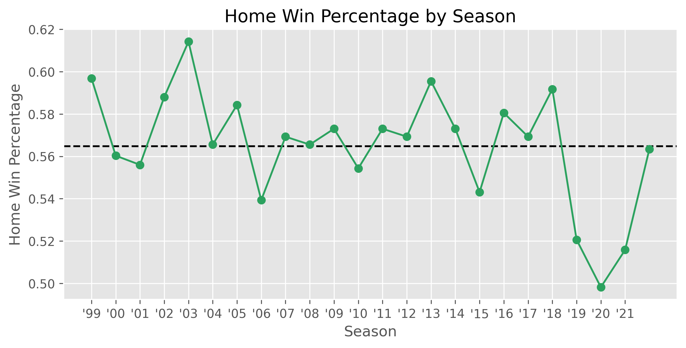

NFL Elo
import numpy as np
import pandas as pd
import matplotlib.pyplot as plt
plt.style.use('ggplot')I like it because of its simplicity. All you need is the two teams that played, and the score to implement the most basic form.
One of my favourite models that I have come across is the Elo ratings. In short, it is a system that can be applied to pairwise matchups such as teams or players. It is quite popular across different domains such as chess, education, chess, online gaming, and many more. I like it because it was the first time I tried adjusting a formula with some knowledge about the topic that I wanted to focus on. Elo updates after every single game a player or team participates in. Because a team can only play the teams on their schedule in sport, Elo allows us to reduce some of the uncertainty to how good a particular team is. Another nice feature of Elo is that it rewards teams more for beating a good team, and punishes good teams for losing to bad teams1. Thus, each team has some unobserved ability parameter, which we try to estimate given our observed data. Elo at its most basic level will calculate the probability that \(Team_{i}\) beats \(Team_{j}\) by taking the difference of their ability parameter, then squeezing it through a sigmoid shape to return a value between \(0\) and \(1\).
Overview of Elo
A matchup of \(Team_{i}\) and \(Team_{j}\) start a match with rankings \(R_{i}\) and \(R_{j}\). The score of the game is then coded as \(0\) for a loss, \(0.5\) for a draw and \(1\) for a win. The priors can be expressed using:
\[P_{i} = \frac{1}{1 + 10^{(R_{j} - R_{i})/400}} \quad P_{j} = 1 - P_{i}\]
Where \(R\) is short for ranking.
where \(P_{i}\) is the prior probability that team \(i\) wins the match. After each match, ratings are updated as follows:
\[R_{i}^{new} = R_{i} + K(S_{i} - P_{i}) \quad R_{j}^{new} = R_{j} + K(S_{j} - P_{j})\]
where \(S_{i}\) is the score of team \(i\) (0/0.5/1) and \(K\) is an update weight (commonly called the k-factor).
Sometimes K Factor is simply called K or Update Factor.
- A larger \(K\) creates more variance as the values get updated, whereas a lower \(K\) value takes longer to adjust to new information. 538 in their Elo model use a \(K\) of \(25\). 2
- In otherwords, it is a value to update a teams Elo rating.
\[\underbrace{Elo_{Team_{i}}}_{\text{new Elo}} = \underbrace{Elo_{Team_{i}}}_{\text{old Elo}} + \text{ K Factor } \Big (\text{ Actual Score }_{Team_{i}} - \text{ Expected Score }_{Team_{i}}\Big )\]
Where
- Actual score is the outcome mapped to 0/0.5/1 depending on the outcome.
- Expected Score: is the win probability for \(Team_{i}\)
As such, it is a zero sum game. For every elo point one team gains, the other team loses the same amount.
Scaling Factor
A scaling factor of \(400\) means that a difference in \(400\) Elo would give the favoured team a \(90\%\) chance to win (see below). A smaller value would decrease the range of values. This does not matter too much, however, I like to keep this at \(400\) so comparing different Elo methods is apples to apples. We can simply look at a scaling factor of \(400\) as:
| Elo Diff | Win Probability |
|---|---|
| +100 | 64% |
| +200 | 75% |
| +400 | 91% |
In code to see this, we can simple do:
df = pd.DataFrame({
'elo_diff': np.arange(-1000, 1100, 100),
# [::-1] reverses the order of the prob column so -1000 is the underdog
'prob': 1 / (1 + 10**((np.arange(-1000, 1100, 100)) / 400))[::-1]
})
fig = plt.figure(figsize = (8, 4))
plt.plot(df['elo_diff'], df['prob'], color = '#2ca25f', linewidth = 2)
plt.yticks(np.arange(0, 1.1, 0.1))
plt.xlabel('Elo Difference')
plt.ylabel('Win Probability')
plt.title('Probability that team $i$ beats team $j$')
plt.grid(True)
plt.show()
Example
For example, say \(Team_{i}\) has an Elo rating of \(1600\) and \(Team_{j}\) has a rating of \(1500\), then we simple input the values into the formula, giving \(Team_{i}\) a \(64\%\) chance of winning.
\[\text{Expected Score/Win Probability} = \frac{1}{1+10^{\frac{(1500 - 1600)}{400}}} = \frac{1}{1 + 10^{\frac{-100}{400}}} = 0.64\]
Adjustments
Home Field Advantage
This is probably the most used adjustment. In short, we provide the home team with \(x\) additional Elo points. But how many should we provide? 538 traditionally use \(65\), which translates to roughly a \(10\%\) increase in win probability. I thought this was a bit high so I ran some quick math to see how often the home team wins.
import numpy as np
import pandas as pd
# I have pbp stored in parquet files
import pyarrow.dataset as ds
from datetime import datetime
import matplotlib.pyplot as plt
plt.style.use('ggplot')
np.set_printoptions(suppress = True)
pd.set_option('display.max_columns', None)
pd.options.display.float_format = '{:.2f}'.format
DATA_PATH = '../../Documents/nfl/data/pbp'
DATA_COLS = ['game_id', 'season', 'home_team', 'away_team', 'season_type', 'week', 'game_date', 'home_score', 'away_score', 'result']
replace_dict = {
'SD': 'LAC',
'OAK': 'LV',
'STL': 'LA'
}
dataset = ds.dataset(DATA_PATH, format = 'parquet')
df = (
dataset
.to_table(columns = DATA_COLS)
.to_pandas()
.drop_duplicates(subset = ['game_id'])
.reset_index(drop = True)
.replace({'home_team': replace_dict, 'away_team': replace_dict})
.assign(home_win = lambda x: np.where(x['home_score'] > x['away_score'], 1, 0))
)
df['home_win'].mean()0.5648177002181365That is a bit of a difference. Just to be sure, I plotted it by season to get a visual incase there was something funky going on.
plt.figure(figsize = (9, 4))
years = range(1999, 2022, 1)
year_lst = [datetime(year, 1, 1).strftime("'%y") for year in years]
plt.axhline(df['home_win'].mean(), color = 'black', linestyle = '--')
plt.plot(df.groupby('season')['home_win'].mean(), marker = 'o', color = '#2ca25f')
plt.xticks(years, year_lst)
plt.title('Home Win Percentage by Season')
plt.xlabel('Season')
plt.ylabel('Home Win Percentage')
plt.grid(True)
plt.show()
The plot checks out with my initial intuition. A \(5\%\) added probability seems more appripriate.
Yearly
538 regress a teams ELO from the previous year by \(\frac{2}{3}\) towards the baseline of \(1500\). This can be achieved via:
\[ELO_{\text{current year}} = ELO_{\text{previous year}} \times \frac{2}{3} + 1500 \times \frac{1}{3}\]
Margin of Victory (MOV)
\[\ln(\left| MOV \right| + 1)\]
By using the log function, a shrinkage effect occurs where blowout results are discounted. For example, winning a game by 28 points is not much more useful than winning by 21 points. This also addresses situations where a team can inflate their ranking by having a very large win.
\[\text{Margin of Victory Multiplier} = ln(|\text{PointDiff}| +1) \times \frac{2.2}{|Elo_{i} - Elo_{j}| \times 0.001 + 2.2}\]
Next
This post has gotten long enough, so I will save the code for the next post.
Footnotes
Teams or players through a season probably do not get better or worse, but our estimation of their skill improves, or the uncertainty decreases.↩︎
In competitions that have a longer season, such as chess, it has been suggested that variable K-Factors are used, where it increases based on the elo values to account for lower rating players more likely to have higher variance, whereas those near the top tend to be more consistent.↩︎